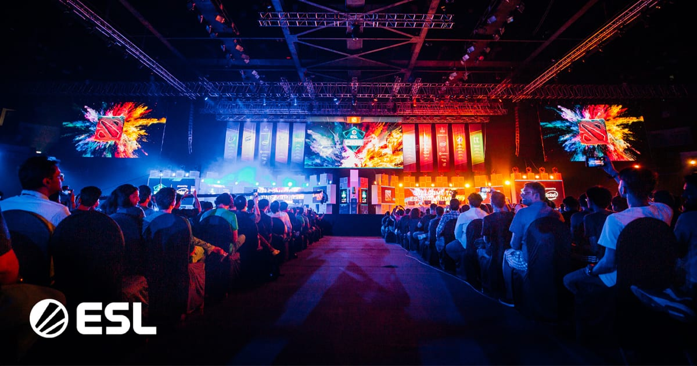
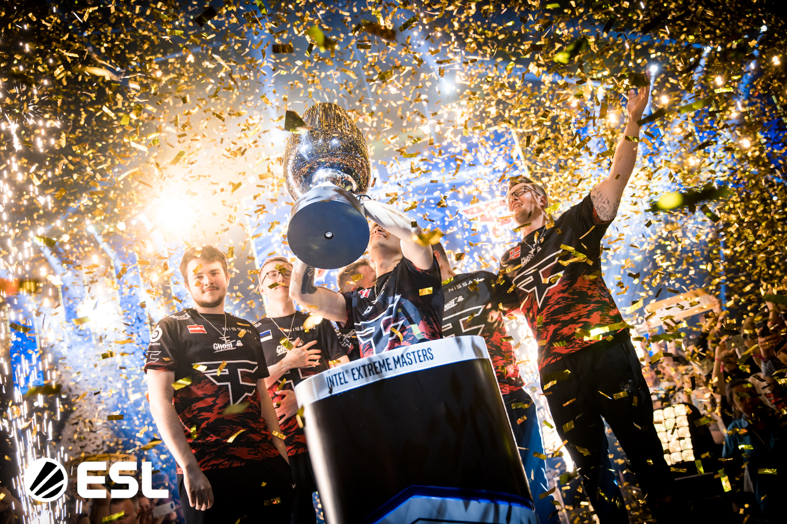
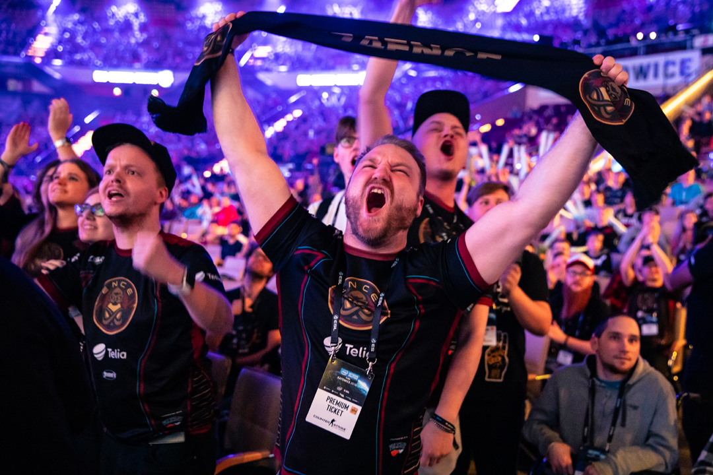

The New Paradgim?
The eSports industry
has seen tremendous growth over the years, bothin terms of viewership and revenue. The increasing viewership is what mainly contributed to the revenue growth - and it's not just because those viewers are generating revenue. Seeing the potential of reaching a large and engaged audience, brands are investing in eSports marketing, both directly and indirectly. This has contributed to rapid revenue growth in the industry, only slowed down by COVID limiting significant public eSports events, although things seem to be returning to normal in 2022.
The future of all sports is esports. That may sound like a bold statement but there is growing evidence to support it. Today’s spectators and participants expect to be digitally engaged while they watch. And the most effective way to deliver digital engagement is through “gamification” - the transformation of watching into playing..
So, if you too are only learning about the world of eSports and are looking to see what all the hype is all about, read on to find out more about some of the most noteworthy reasons this industry became so popular, so fast.
Many believe this will lead to a tectonic shift in media distribution, IP monetisation and advertising. Three core elements are contributing to the esports industry’s rise as the next major spectator sport: streamed competitions with organised leagues, professional players whose efforts can be viewed anywhere, and live events in major offline sports venues. It’s why platforms such as Twitch, where people from all over the world can tune in and watch gamers, or “streamers,” play video games, is the largest live streaming platform in the US. In 2014,Amazon bought Twitch for nearly $1 billion, though some business analysts questioned the move. Today, Twitch has approximately 5 million active viewers who spend 106 minutes each day watching live gaming, which ranks higher than prime time cable TV networks like CNN.

Digital culture is redefining what sport means and young people are redefining what ‘playing sport’ entails. The esports world is made up of competitive, tournament-led video gaming, with professional leagues, mass spectatorship and significant sponsors. Additionally, eSports is actually more inclusive and more easily accessible than any other sport. In the world of eSports, anyone can become a champion, regardless of their age, gender or physical ability. Of course, in order to become the best of the best, you will still need to practice intensely. But this form of practice not only guarantees hours upon hours of great fun, but it’s also significantly less demanding and intense from the physical point of view. Here, it won’t really matter if you’re the biggest or the toughest player on the field, as all of the participants are more or less equal in the digital world.
How to get into Esports
The first thing you’ll need to do is pick your game(s). Before looking into the biggest events of the year, first decide what sorts of games you want to watch. Take a look at what you like to play as well as what you understand and go from there. Start by sampling a few games you think you might be interested in. You need to really enjoy the game you choose because you’ll be watching and (probably) playing a lot of it. Games are separated by genres in esports with some of the biggest ones being fighting, first-person shooters (FPS), multiplayer online battle arena (MOBA), collectible card games (CCG) and real-time strategy (RTS).
A good place to start playing, most of the time, is right in the games you’ve chosen to keep tabs on. A lot of games have ranked modes online that match you with other players around your skill level. You could also join a club or a team at your school, local gaming centre or any other organization that has open bracket events for you to participate in. More on this later.
Leagues such as FACEIT is much more than just a PUG platform - it’s also home to the majority of the open qualifiers that give access to big international tournaments for teams that manage to go through them. And even on those, your FACEIT level can impact the players you face. If most of your team is level 10, you’re most likely to face a lower leveled team in the first round due to automatic seeding - that’s just one of the reasons why ranking up is so important, in case you’re trying to make it a career.
The Relevance Of Esports in School today
Esports in school is catching on as the popularity of esports continues to grow. And while research shows that participation in school activities improves students’ performance and overall well-being, parents and educators have resisted the idea of organized esports in schools. But based on current trends, that may be set to change for the better. As starting an esports team in school therefore can be daunting, you can learn how to set up one in our upcoming and complete guide.